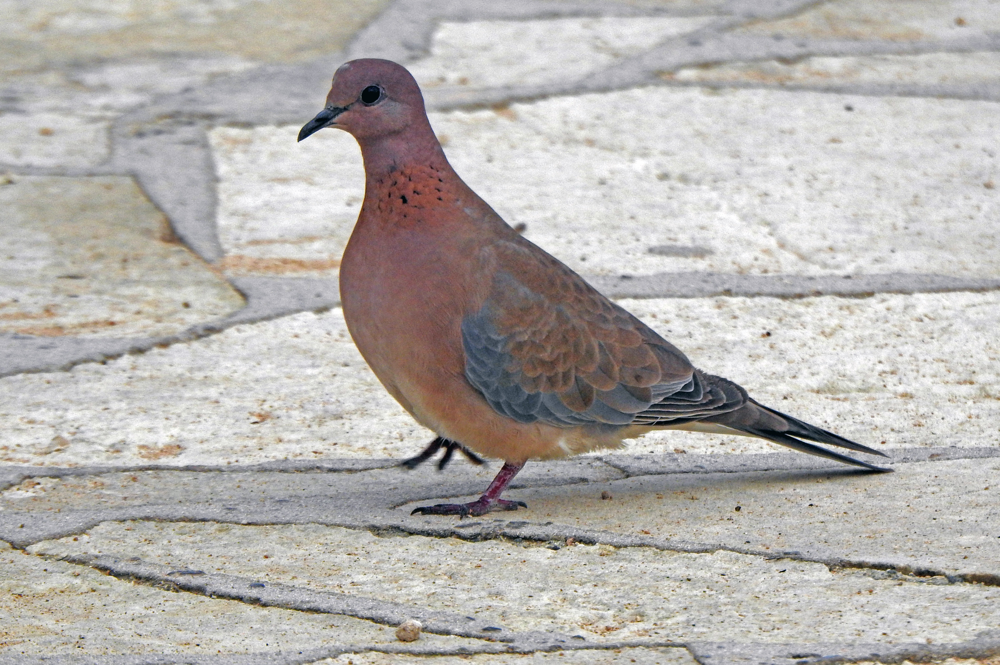

The Laughing Dove is a small, slender dove with a warm pinkish-brown body, a long tail, and a distinctive black-and-white spotted patch on the sides of the neck. It is commonly found in dry woodland, scrub, farmland, gardens, parks, and urban areas, where it usually feeds on seeds and grains on the ground. Its soft, rhythmic call is often heard from trees, buildings, or other elevated perches. Compared with the Spotted Dove, the Laughing Dove is smaller and more slender, and its neck markings form a relatively small black-and-white patch rather than the Spotted Dove's larger spotted collar. The Laughing Dove also has a warmer pinkish-brown appearance and a more delicate build. Compared with the Eurasian Collared Dove, it is much smaller and has a spotted neck rather than a simple black collar. It also differs from the Red Collared Dove, which is smaller and has a more distinctly reddish body with a narrow black collar. Compared with the Rock Pigeon, the Laughing Dove is slimmer, longer-tailed, and lacks the heavier body and broad wings of the pigeon. Its small size, warm coloration, spotted neck, and long tail therefore provide several reliable identification features.